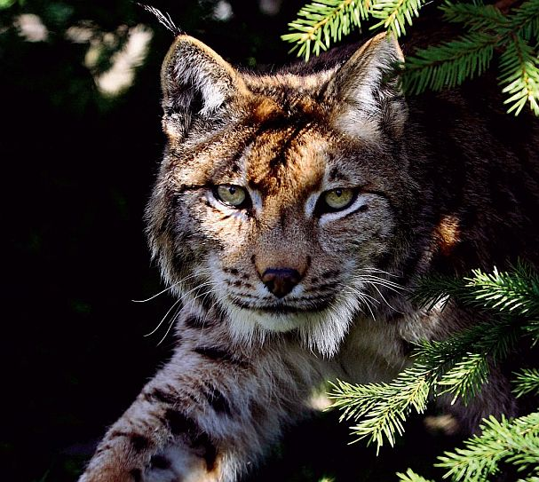

Durata de viata: Intre 12 si 20 ani
Unde traieste (mediu de viata): Regiuni montane si paduri izolate
Dieta: Carnivor
Clasa: Mamifer
Nume stiintific: Felis Lynx
Ce mananca (mancarea principala): Caprioare,pasari,iepuri
Predatori: Lupii,coiotii,oamenii,pumele
Rasul este vanat anual deoarece un numar foarte mare al acestora reprezinta un pericol pentru comunitatea locala. Dintre toate tarile europene, aici se intalnesc cele mai multe exemplare, aproximativ 1.300.
Surata a linxului comun, rasul iberic are parte insa de o eticheta infricosatoare: este una dintre numeroasele specii aflate intr-un pericol sever de disparitie. Iar factorii care determina reducerea dramatica a efectivului sau sunt departe de a fi unii usor de indepartat. Iata despre ce este vorba!
In prezent, se estimeaza ca in Peninsula Iberica mai traiesc doar circa 1000 de exemplare de rasi iberici, fapt care face ca necesitatea intensificarii eforturilor de conservare sa fie si mai stringenta. In acest sens, in prezent se deruleaza un proiect al Comisiei Europene care vizeaza conservarea habitatului acestui animal, dar si monitorizarea atenta a populatiei sale, cat si gestionarea efectivelor de iepuri.
Denumit si pantera Carpatilor, rasul este raspandit natural din golul alpin pana in Delta Dunarii, avand o mare adaptabilitate si amplitudine ecologica. La ora actuala insa, exemplarele din afara Carpatilor si Subcarpatilor sunt foarte rare, ca urmare a vanatorii necontrolate practicate in secolele XX si XXI.
Curiozitati:
- E poreclit si vanatorul invizibil.
- Numele lui, rasul (Linx linx) , vine de la tipatul caracteristic.
- De multe ori, sunetul fioros e menit sa alunge puii de un an de langa mama, pentru a face loc urmatoarei generatii.
- Are gheare retractile, foarte ascutite, lungi de aproximativ 4 cm.
- Un lucru putin cunoscut este faptul ca rasul poate fi domesticit.
- Alta caracteristica ciudata a rasului este ura sa fata de pisica salbatica pe care o vaneaza cu inversunare, pana la exterminare.
- Felina puternica si singuratica, rasul are nevoie de un areal foarte mare (2400 si 2500 de hectare), de circa 10 ori mai mult decat un urs brun.
- Este un animal carnivor si iubitor de sange, consumand la animalele vanate in primul rand organele cu masa sanguina semnificativa.
- Poate sari de la inaltimi de peste 6 metri direct asupra prazii.
- Exista patru specii de ras, raspandite in diferite zone ale globului.
- Sub gat prezinta un desen negru (putin vizibil) in forma de papion.
- Sunt animale solitare, iar imperecherea nu are loc la fiecare an.
- Femelele nasc 2-4 pui, orbi pentru doua saptamani.